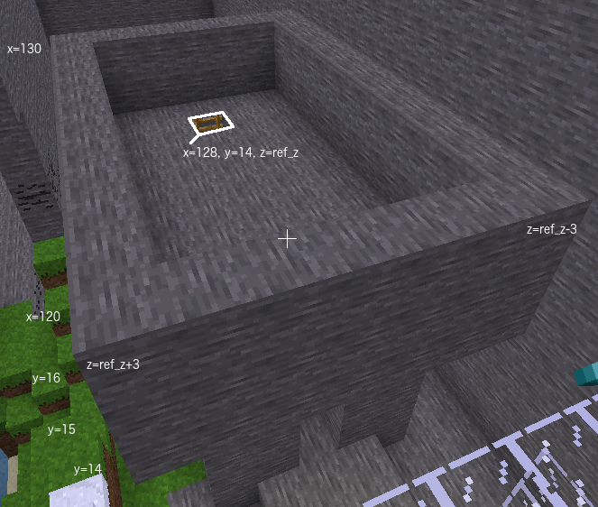
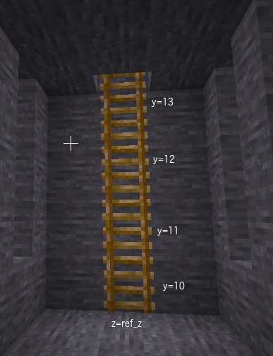

The castle roof sits on top of the castle base. It is a similar shape to the castle base, an open box without a top, but it extends on block on every side in the x and z directions and is only three blocks high.
Add a 11 x 7 x 3 open top stone box on top of the castle base to be the roof.
Add a ladder so that players can climb up the ladder to the roof. Ladder needs a direction so that its orientation is known and in which part of the cube of space the ladder should be placed. See the hints for more details.
 